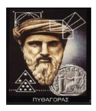

Pythagoras adalah seorang ahli matematika dan filsafat berkebangsaan Yunani yang lahir pada tahun 570 SM, di pulau Samos, di daerah Ionia. Pythagoras dikenal sebagai “Bapak Bilangan”.
Pythagoras sering berkelana untuk berguru dan menimba ilmu, hingga sampai di kota Kroton di Italia Selatan. Di kota ini, Phytagoras mendirikan sebuah tarekat beragama yang kemudian dikenal dengan sebutan “Kaum Phytagorean.”
Pengikut Phytagoras berkembang menjadi dua aliran. Aliran pertama disebut akusmatikoi (akusma artinya apa yang telah didengar peraturan) mereka mengindahkan penyucian dengan menaati semua peraturan secara saksama. Aliran kedua disebut mathematikoi (mathesis artinya ilmu pengetahuan) mereka mengutamakan ilmu pengetahuan, khususnya ilmu pasti.
Phytagoras yang terkenal adalah teorema Pythagoras, yang menyatakan bahwa kuadrat hipotenusa dari suatu segitiga siku-siku adalah sama dengan jumlah kuadrat dari kaki-kakinya (sisi-sisi siku-sikunya). Walaupun fakta di dalam teorema ini telah banyak diketahui sebelum lahirnya Pythagoras, teorema ini dikreditkan kepada Pythagoras karena dialah yang pertama membuktikan pengamatan ini secara matematis.